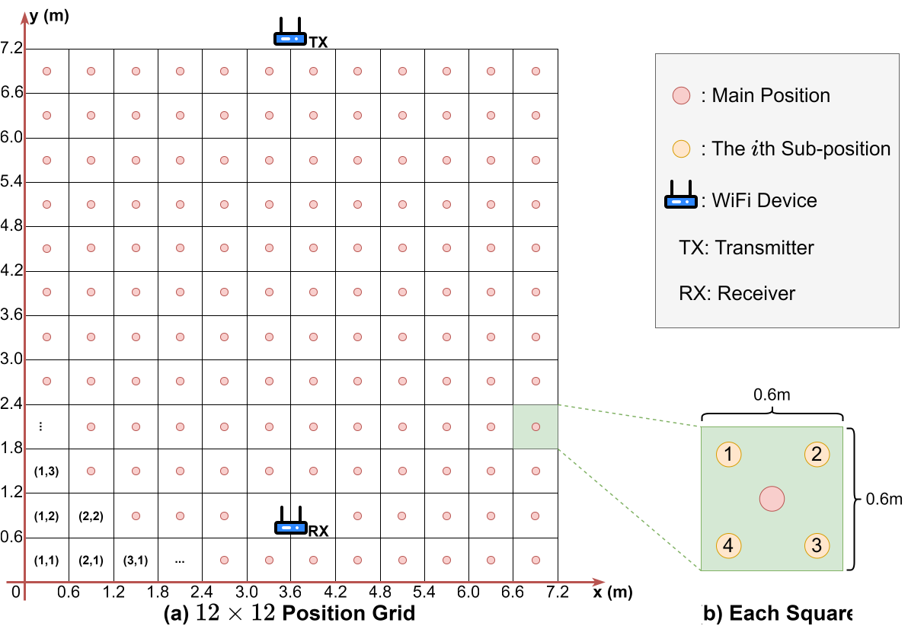

MultiFi: Multi-target Dataset for WiFi-based Human Action Recognition and Device-free Localization
Huakun Huang, Peiliang Wang, Kejia Guo, Liwen Tan, Lingjun Zhao, Huawei Huang
WiFi-based human sensing has become a crucial non-invasive technology in various human-centric applications, including metaverse interaction, sign language interpretation, and healthcare monitoring. WiFi-based human sensing has two major tasks, i.e., device-free localization (DFL) and human action recognition (HAR). The existing solution for both tasks mainly focuses on perceiving one target at a time. Focusing on single-target localization significantly restricts the potential applications of WiFi-based human sensing systems. In this paper, we propose MultiFi, the first multi-target dataset for DFL and HAR. It has 710 available positions for DFL and 22 daily actions for HAR. MultiFi also provides data collected from different environments. We believe our MultiFi will significantly contribute to device-free localization, human action recognition, human-computer interaction, and smart building research.
Download
OneDrive: https://1drv.ms/f/s!AmW7EXHtePrWou1L30k7hpBggY80ow?e=9w2wSE
Password: t5QhoMScZ_BPlZx
Configuration
Environment
Figure below illustrates our experiment configuration. It is in a classroom at the university. We removed all furniture from the classroom. Two WiFi devices (i.e., transmitter and receiver) are placed at opposite ends of the classroom.

WiFi Configuration
The WiFi signal transmission configurations are listed below:
| Center Frequency | 5.68GHz |
| Bandwidth | 40MHz |
| Transmitter Power | 20dBm |
| Number of Subcarrier | 114 |
| Number of Transmitter Antenna | 3 |
| Number of Receiver Antenna | 3 |
| Sampling frequency | 1000Hz |
Hardware
The mini PC hardware configurations are listed below:
| CPU | i3-4030U |
| RAM | 4G DDR3 1600Hz |
| WiFi NIC | Qualcomm AR9380 |
Software
We use PicoScenes v2023.1026.0939 to collect data.
Zhiping Jiang, Tom H. Luan, Xincheng Ren, Dongtao Lv, Han Hao, Jing Wang, Kun Zhao, Wei Xi, Yueshen Xu, Rui Li, Eliminating the Barriers: Demystifying Wi-Fi Baseband Design and Introducing the PicoScenes Wi-Fi Sensing Platform, in IEEE Internet of Things Journal (IEEE IOT-J), doi: 10.1109/JIOT.2021.3104666.
Data usage
We provide raw PicoScenes data and Numpy ndarry data. The most convenient way to use data is to download the Numpy ndarry data, which Numpy can directly read using np.load. To use the raw PicoScenes data, please refer to the following tools to parse the data.
* Note: The official parsing library PicoscenesToolbox will preprocess the phase [1,2] and remove the cyclic shift delay (CSD). picoscenes2numpy using the interface of PicoscenesToolbox also remove the CSD in the output of phase.
* Note: The official parsing library PicoscenesToolbox will interpolate the subcarriers [1,2], and the original 114 subcarriers will be interpolated to 117 subcarriers. picoscenes2numpy removes these subcarriers, by refers to 802.11n and the subcarrier index in the data.
License
MultiFi is released under CC BY-NC-SA 4.0.

MultiFi-DFL
MultiFi-DFL is a dataset for WiFi-based device-free localization. It provides a total of 710 available positions to localize up to three targets simultaneously.
Grid
Figure below shows the experiment setup of MultiFi-DFL, which is used for WiFi-based DFL. The experiment area is divided into 12 ⨉ 12 grid area. The area of each square is 0.6 ⨉ 0.6m. The area of the entire experiment area is 51.84m2. Each square contains 5 positions for the target. The center of the grid is the Main-position, and the remaining four Sub-position are located on the four corners. The transmitter (TX) has been placed outside the experiment area. The receiver (RX) has been placed inside the area and occupies two squares. Subtract these two squares, the total number of available positions in MultiFi-DFL is 710. We improve data diversity by placing RX in the experiment area. Thus, there are 12 square (i.e., 60 positions) that are not between TX and RX but behind RX.

File Organization
├── MultiFi-DFL <Raw PicoScenes data>
│ ├── 0p <0 target (i.e., environment)>
│ ├── 1p <1 target>
│ | ├── main <Main-position>
│ | | ├── (1,1).csi <Target in (1,1)>
│ | | ├── (1,2).csi <Target in (1,2)>
│ | | └── ...
│ | ├── sub1 <1st sub-position>
│ | ├── sub2 <2nd sub-position>
│ | └── ...
│ ├── 2p <2 targets>
│ │ └── main <Main-position>
│ │ ├── (2,4)+(3,5).csi <2 targets in (2,4) and (3,5)>
│ │ ├── (3,3)+(6,4).csi <2 targets in (3,3) and (6,4)>
│ │ └── ...
│ └── 3p <3 targets>
│ └── main <Main-position>
│ ├── (2,4)+(9,3)+(3,5).csi <3 targets in (2,4), (9,3), and (3,5)>
│ ├── (5,5)+(8,8)+(5,3).csi <3 targets in (5,5), (8,8), and (5,3)>
│ └── ...
└── MultiFi-DFL.npy <Numpy ndarry data>
├── 0p
├── 1p
| └── main
| ├── (1,1).mag.npy <Amplitude>
| ├── (1,1).phase.npy <Phase>
| ├── (1,1).timestamp.npy <Timestamp>
| └── ...
└── ...
MultiFi-HAR
MultiFi-HAR is a dataset for WiFi-based human action recognition. It provides a total of 22 available actions. The action was performed by up to three targets simultaneously.
Environment
The MultiFi-HAR includes a set of 22 daily actions that can be performed at home. These actions are designed based on research in the smart buildings domain. They can be utilized to control systems such as heating, ventilation, and air conditioning. The details of these 22 actions are listed below.

Actions
| Action | Description |
|---|---|
| C1 | Putting on clothes |
| C2 | Huffing |
| C3 | Crossing chests |
| C4 | Shaking shoulders |
| C5 | Stomping feet |
| C6 | Crossing legs |
| C7 | Rubbing hands |
| C8 | Huffing with rubbing hands |
| H1 | Taking off clothes |
| H2 | Rolling up sleeves |
| H3 | Fanning with hands |
| H4 | Fanning with paper |
| H5 | Wiping sweat |
| H6 | Shaking shirt |
| N1 | Stretching |
| N2 | Yawning |
| N3 | Turning wrists |
| N4 | Turning neck |
| N5 | Turning arms |
| N6 | Turning body |
| N7 | Moving head |
| N8 | Standing |
The figure below shows the image of these actions.

File Organization
├── MultiFi-HAR <Raw PicoScenes data>
| ├── 0p <0 target (i.e., environment)>
| |── 1p <1 target>
| | ├── env1 <Environment 1 (w/o obstacle)>
| | | ├── bright <Lighting condition>
| | | | ├── C1 <Action C1 (Putting on clothes)>
| | | | | ├── sbj1 <Subject 1>
| | | | | | ├── o1 <Orientation 1 (Face to the TX)>
| | | | | | | ├── .csi <Contain two samples cut in the middle>
| | | | | | | ├── ...
| | | | | | └── o2 <Orientation 2 (Face to the RX)>
| | | | | └── ...
| | | | └── ...
| | | └── dark <Dark condition>
| | └── env2 <Environment 2 (w/ obstacle)>
| ├── 2p <2 targets>
| └── 3p <3 targets>
└── MultiFi-HAR.npy <Numpy ndarry data>
├── 0p
├── 1p
| └── env1
| └── bright
| └── sbj1
| ├── .mag.npy <Amplitude>
| ├── .phase.npy <Phase>
| ├── .timestamp.npy <Timestamp>
| └── ...
└── ...
Subject Group
The subject are numbered from A to U. The subject group used in the dataset are listed below. The scenario is consistent with the directory structure of the dataset.
MultiFi-DFL
| Scenario | Subject |
|---|---|
| 1p | A |
| 2p | A+B |
| 3p | A+B+I |
MultiFi-HAR
| Scenario | Subject |
|---|---|
| 1p-env1-bright-sbj1 | N |
| 1p-env1-dark-sbj1 | A |
| 1p-env1-dark-sbj2 | J |
| 1p-env1-dark-sbj3 | I |
| 1p-env2-bright-sbj1 | H |
| 1p-env2-bright-sbj2 | L |
| 1p-env2-bright-sbj3 | N |
| Scenario | Subject |
|---|---|
| 2p-env1-bright-sbj1 | D+I |
| 2p-env1-dark-sbj1 | D+L |
| 2p-env1-dark-sbj2 | A+F |
| 2p-env1-dark-sbj3 | D+N |
| 2p-env1-dark-sbj4 | D+H |
| 2p-env2-bright-sbj1 | F+I |
| 2p-env2-bright-sbj2 | A+I |
| 2p-env2-bright-sbj3 | K+L |
| 2p-env2-bright-sbj4 | B+E |
| Scenario | Subject |
|---|---|
| 3p-env1-bright-sbj1 | C+D+G |
| 3p-env1-dark-sbj1 | D+G+H |
| 3p-env1-dark-sbj2 | C+P+Q |
| 3p-env1-dark-sbj3 | S+B+E |
| 3p-env1-dark-sbj4 | C+D+G |
| 3p-env2-bright-sbj1 | T+O+H |
| 3p-env2-bright-sbj2 | A+O+H |
| 3p-env2-bright-sbj3 | C+R+I |
| 3p-env2-bright-sbj4 | B+U+M |